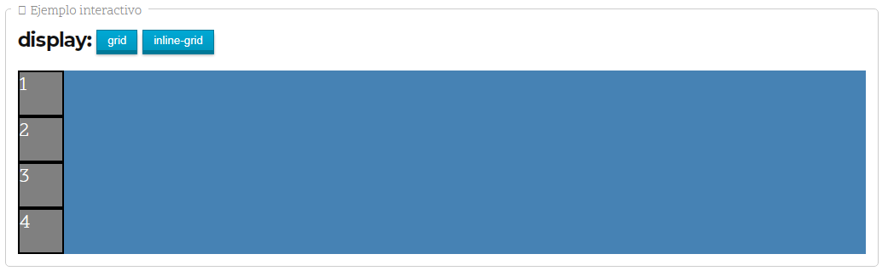

CSS GRID
Como las últimas versiones de los navegadores ya ofrecen soporte para CSS Grid, sólo es necesario familiarizarse con su forma de trabajar de rejilla y aplicar el nuevo display: grid con el que comenzaremos a usar todas sus característicaspara posicionar los elementos en la página:.
Ofrece un control total de las dos dimensiones.
La ubicación de los ítems es libre; no es una tabla.
Es posible colocar los ítem donde necesitemos, en cualquiera de las celdas que el Grid describe, incluso en celdas que no has descrito..
Puede haber ítems que se coloquen solos gracias al su característica de auto-placement.
También podemos conseguir comportamientos similares con una cantidad de atributos novedosas, aunque con distintos matices que las diferencian..
Antes de comenzar con Grid CSS, quizás sería conveniente dominar el sistema Flexbox, ya que Grid toma la filosofía y bases de él. Para utilizar Grid CSS necesitaremos tener en cuenta una serie de conceptos que utilizaremos a partir de ahora y que definiremos a continuación:
Contenedor: El elemento padre contenedor que definirá la cuadrícula o rejilla..
Ítem: Cada uno de los hijos que contiene la cuadrícula (elemento contenedor).
Celda (grid cell): Cada uno de los cuadritos (unidad mínima) de la cuadrícula.
Area (grid area): Región o conjunto de celdas de la cuadrícula.
Banda (grid track): Banda horizontal o vertical de celdas de la cuadrícula.
Línea (grid line): Separador horizontal o vertical de las celdas de la cuadrícula.
Para utilizar cuadriculas Grid CSS, trabajaremos bajo el siguiente escenario:
Para activar la cuadrícula grid hay que utilizar sobre el elemento contenedor la propiedad display y especificar el valor grid o inline-grid.
Este valor influye en como se comportará la cuadrícula con el contenido exterior. El primero de ellos permite que la cuadrícula aparezca encima/debajo del contenido exterior (en bloque) y el segundo de ellos permite que la cuadrícula aparezca a la izquierda/derecha (en línea) del contenido exterior

1. Con una Hoja de Estilo podemos modificar la presentación de cada elemento sin modificar el código HTML, ahorrando esfuerzo y tiempo de edición. Así, el mantenimiento del sitio web se hace más sencillo.
Grid con filas y columnas
Es posible crear cuadrículas con un tamaño explícito. Para ello, sólo tenemos que usar las propiedades CSS grid-template-columns y grid-template-rows, que sirven para indicar las dimensiones de cada celda de la cuadrícula, diferenciando entre columnas y filas. Las propiedades son las siguientes:
Conociendo estas dos propiedades, asumamos el siguiente código CSS:
Esto significa que tendremos una cuadricula con 2 columnas (la primera con 50px de ancho y la segunda con 300px de ancho) y con 2 filas (la primera con 200px de alto y la segunda con 75px de alto). Ahora, dependiendo del número de ítems (elementos hijos) que tenga el contenedor grid, tendremos una cuadrícula de 2x2 elementos (4 ítems), 2x3 elementos (6 ítems), 2x4 elementos (8 ítems) y así sucesivamente. Si el número de ítems es impar, la última celda de la cuadrícula se quedará vacía.
A medida que fueramos incluyendo más ítems en el grid, podríamos aumentar también el número de parámetros de grid-template-columns y/o grid-template-rows. Ten en cuenta que en este caso, tenemos dos valores en cada propiedad (2x2), lo que hacen una cuadrícula de 4 elementos, que es justo el número de ítems en el HTML.